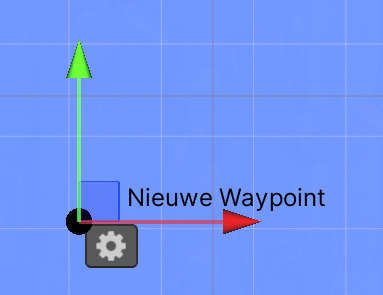
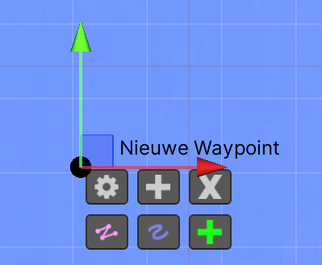
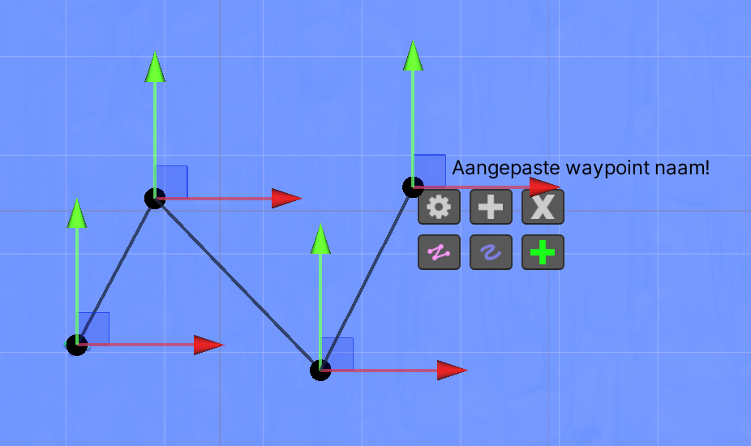
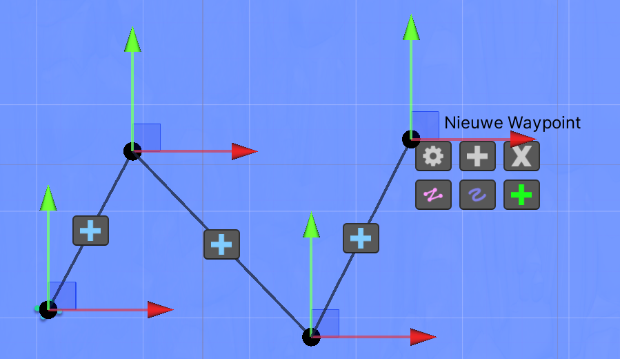
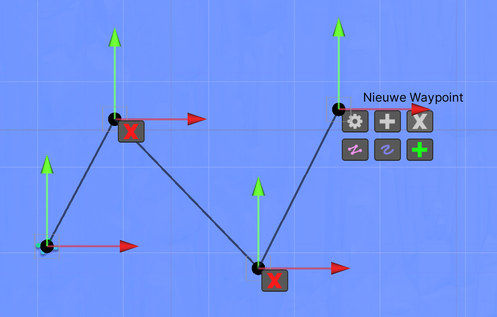
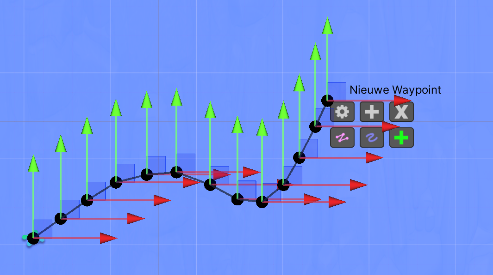
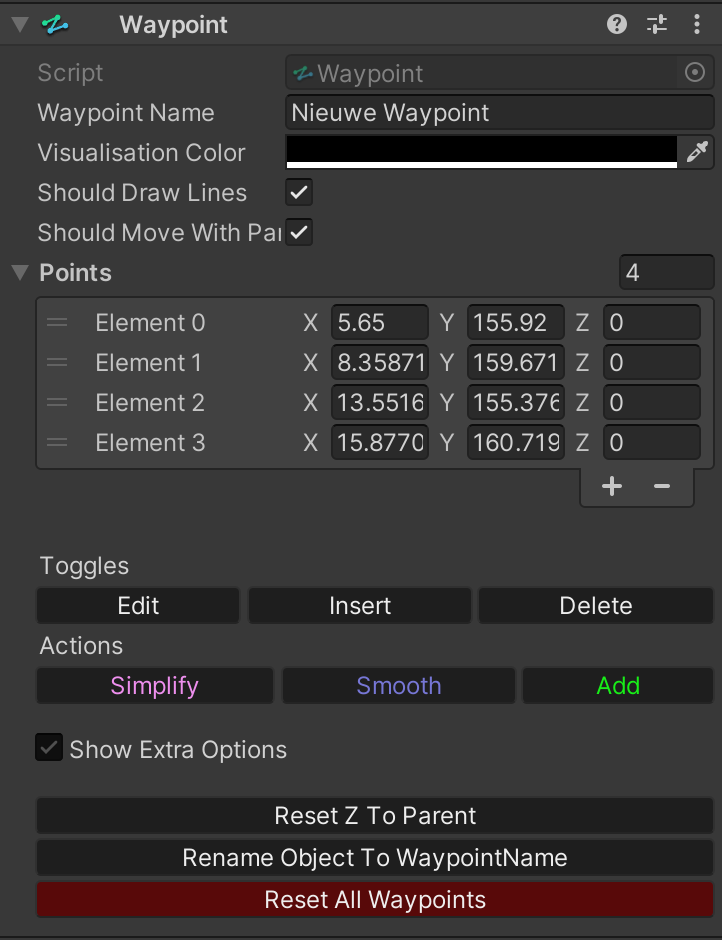
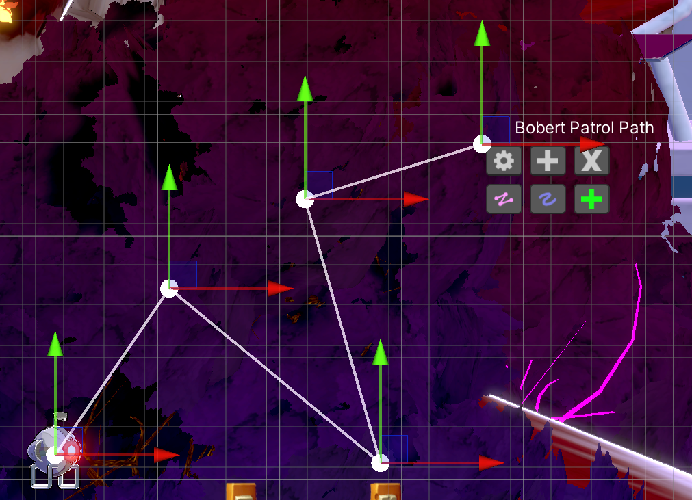
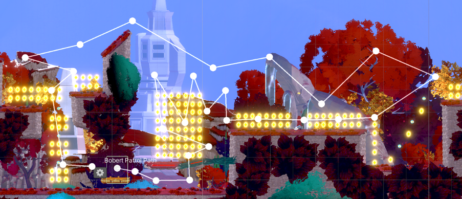

Waypoint System
Also yes all screenshots are in Dutch, system stays the same though ¯\_(ツ)_/¯
Waypoints are specific points in a game world that serve as navigation aids for objects such as players, enemies, and moving platforms. They are widely used in games to control the movement and positioning of objects. This ensures smooth and controlled gameplay experiences.
Creating a Waypoint in a game was very difficult at first, with a lot of empty GameObjects and clutter. But now all that is no longer necessary, with the Waypoint System you can easily edit and use a list of points in the gizmos. This can be useful for moving platforms, splines, enemies, spawners and more!
Gizmos
The gizmos is easy to use, it consists of the line itself, position handles and a few buttons to edit the line. When you create a new waypoint it looks like this:


If you press the gear, more settings will appear.
The gear toggles the settings on/off.
The gray plus sign switches the insert mode on/off.
The gray X switches the delete mode on/off.
The pink line simplifies the waypoint, removing unnecessary points.
The purple line makes the waypoint smoother, although there will be exponentially more points.
And the green plus sign creates a new point in the waypoint, below you see a waypoint with multiple points,
and a custom name. You can always adjust this in the inspector!

Modes
Then there are also the 2 modes, the insert and delete mode.
By switching on the insert mode (can be done in the inspector and gizmos) there will be blue plus signs between the points in the line. By pressing these plus signs there will be a point where the plus sign is, easy to quickly place a point in between.


Then there is also the delete mode, by turning it on, red crosses appear at the points, by pressing this the point is deleted.
Pressing the pink line removes unnecessary points in the line, while the purple line does the exact opposite, it makes the line smoother by adding more points using catmull-rom.

Inspector

In the inspector you have even more control over your waypoint than in the gizmos, although the gizmos is useful, the inspector has the ability to change the name, color, and other settings.
Code
Once you're happy with your waypoint you can quickly use it in another script, the code below shows how a script can get the points from the waypoint, and even change them.
using UnityEngine;
public class WaypointChanger : MonoBehaviour
{
[SerializeField] private Waypoint waypoint;
private void Start()
{
waypoint[0] = transform.position;
waypoint.WaypointName = "This waypoint's name is now this very long string!";
}
}Examples
This is an example of a Waypoint on a Bobert (from Project StarFall). This means Bobert knows where it can go.

Small Patrol Path

Big Patrol Path